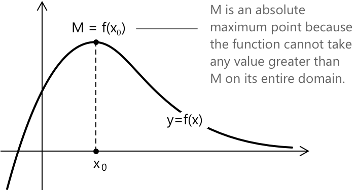
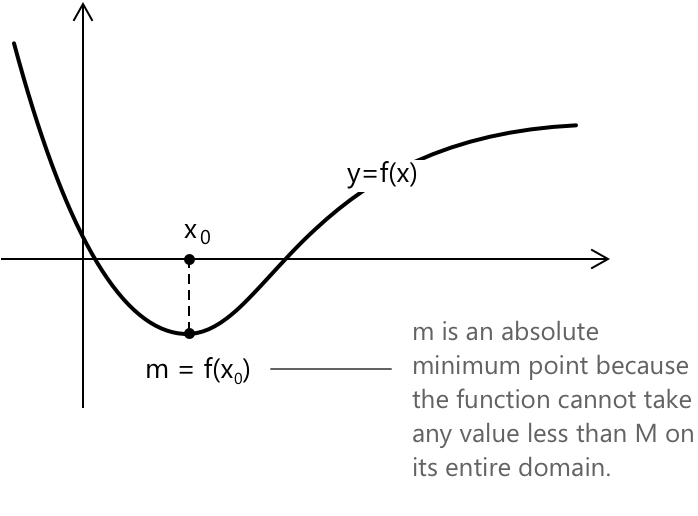
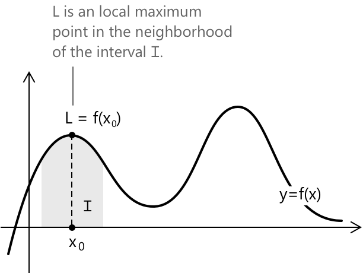
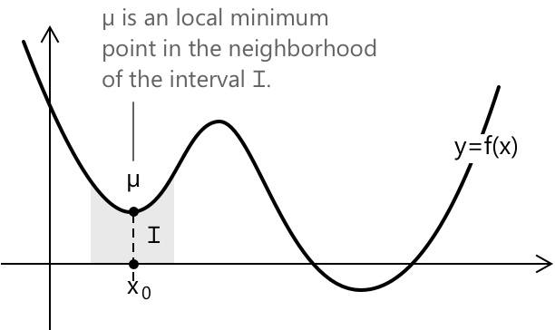
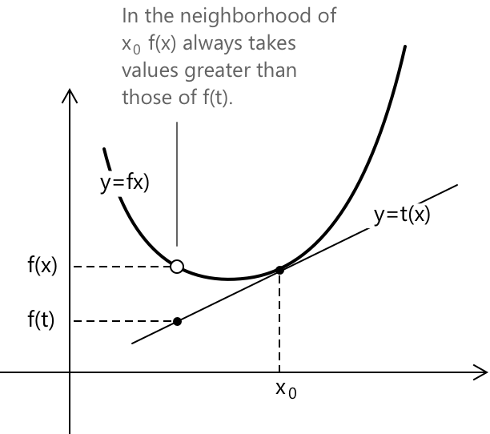
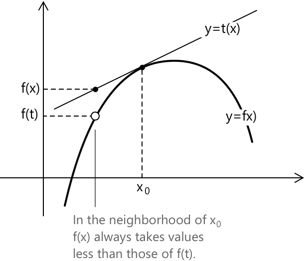
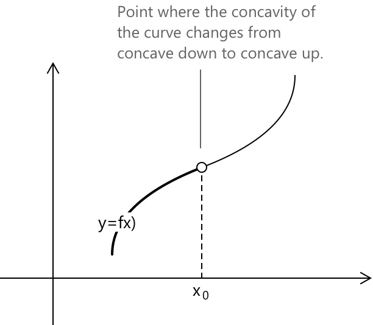
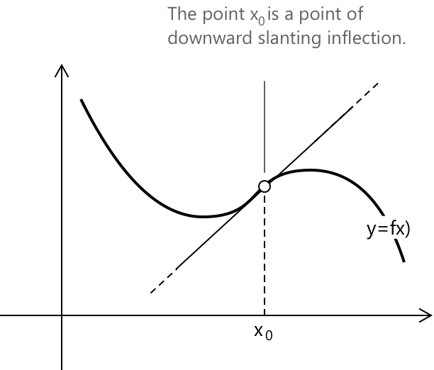

Максимуми, мінімуми та точки перегину
Глобальні точки максимуму та мінімуму
Максимум і мінімум функції \( f(x) \) представляють відповідно найвище та найнижче значення, яких функція може досягти у своїй області визначення. Іншими словами, вони вказують на екстремальні точки функції, показуючи, де \( f(x) \) досягає свого найбільшого можливого значення або найменшого можливого значення для всіх допустимих значень \( x \) у заданій області визначення.
Нехай задано функцію \( y = f(x) \) з областю визначення \( D \), тоді точка \( x_0 \in D \) є глобальним максимумом, якщо \( f(x_0) \geq f(x) \) для кожного \( x \in D \). Значення \( f(x_0) = M \) є глобальним максимумом функції.

Нехай задано функцію \( y = f(x) \) з областю визначення \( D \), тоді точка \( x_0 \in D \) є глобальним мінімумом, якщо \( f(x_0) \leq f(x) \) для кожного \( x \in D \). Значення \( f(x_0) = m \) є глобальним мінімумом функції.

Якщо глобальний максимум і глобальний мінімум функції існують, вони є єдиними. Згідно з теоремою Вейєрштрасса, якщо функція є неперервною на замкненому та обмеженому проміжку \([a, b]\), то вона досягає як глобального максимуму, так і глобального мінімуму на цьому проміжку.
Локальні точки максимуму та мінімуму
У деяких випадках функція може мати більше одного піка або западини на певному проміжку. Такі точки відомі як локальні максимуми та локальні мінімуми. Вони відповідають позиціям, де функція досягає відносно найвищого або найнижчого значення порівняно з її безпосереднім оточенням, не обов'язково будучи абсолютними екстремумами на всій області визначення.
Нехай задано функцію \( y = f(x) \), визначену на проміжку \([a, b]\), тоді точка \( x_0 \in [a, b] \) є локальним максимумом, якщо існує окіл \( I \) точки \( x_0 \), такий що \( f(x_0) \geq f(x) \) для кожного \( x \) у проміжку \( I \).

Більш формально, нехай задано функцію \( y = f(x) \), яка визначена та неперервна в околі точки \( x_0 \) і диференційовна в тому самому околі для кожного \( x \neq x_0 \). Якщо для кожного \( x \) в околі виконуються наступні умови:
\[ \begin{align} f’(x) &> 0 \quad \text{для} \quad x < x_0 \\ f’(x) &< 0 \quad \text{для} \quad x > x_0 \end{align} \]
тоді \( x_0 \) є точкою локального максимуму для функції \( f(x) \). Маємо:
| \[ x_0 \] | ||
|---|---|---|
| \( f’(x) \) | \( \boldsymbol{+} \) | \( \boldsymbol{-} \) |
| \( f(x) \) | \( \boldsymbol{\nearrow} \) | \( \boldsymbol{\searrow} \) |
Нехай задано функцію \( y = f(x) \), визначену на проміжку \([a, b]\). Точка \( x_0 \in [a, b] \) називається локальним мінімумом, якщо існує окіл \( I \) точки \( x_0 \) такий, що \( f(x_0) \leq f(x) \) для кожного \( x \) у проміжку \( I \).

Якщо виконуються наступні умови:
\[ \begin{align} f’(x) &< 0 \quad \text{для} \quad x < x_0 \\ f’(x) &> 0 \quad \text{для} \quad x > x_0 \end{align} \]
тоді \( x_0 \) є точкою локального мінімуму для функції \( f(x) \). Маємо:
| \[ x_0 \] | ||
|---|---|---|
| \( f’(x) \) | \( \boldsymbol{-} \) | \( \boldsymbol{+} \) |
| \( f(x) \) | \( \boldsymbol{\searrow} \) | \( \boldsymbol{\nearrow} \) |
Функція може мати щонайбільше один глобальний максимум і щонайбільше один глобальний мінімум, але вона може мати кілька локальних максимумів і локальних мінімумів у своїй області визначення. Згідно з теоремою Ферма, точки відносного максимуму та мінімуму диференційовної функції, що знаходяться всередині області визначення функції, є стаціонарними точками. Це означає, що дотична в точці відносного максимуму або мінімуму паралельна осі x. У цьому випадку похідна функції в точці \(x_0\) дорівнює нулю, і ми маємо \(f{\prime}(x_0) = 0\).
Випуклість та ввігнутість
Кажуть, що функція \( f(x) \) є випуклою вниз (ввігнутою) у точці \( x_0 \), якщо існує окіл \( I \) точки \( x_0 \) такий, що для кожного \( x \in I \) при \( x \neq x_0 \) функція \( f(x) \) набуває значень, більших за значення прямої \( y = t(x) \), яка є дотичною до графіка \( f(x) \) у точці \( x_0 \).
\[ f(x) > t(x) \quad \forall x \in I – \lbrace x_0 \rbrace \]

Аналогічно, кажуть, що функція \( f(x) \) є випуклою вгору у точці \( x_0 \), якщо існує окіл \( I \) точки \( x_0 \) такий, що для кожного \( x \in I \) при \( x \neq x_0 \) функція \( f(x) \) набуває значень, менших за значення прямої \( y = t(x) \).
\[ f(x) < t(x) \quad \forall x \in I - \lbrace x_0 \rbrace \]

Поняття випуклості та ввігнутості детально розглянуті в їхньому аналітичному формулюванні в статті Випуклість та ввігнутість функцій
Точки перегину та зміна випуклості
Точкою перегину називається точка, в якій змінюється випуклість функції.
Розглянемо випадок, коли функція \( y = f(x) \) визначена на проміжку \( (a, b) \), і нехай \( x_0 \in (a, b) \) є або точкою, де \( f(x) \) диференційовна, або точкою, де:
\[ \lim_{x \to x_0} f’(x) = +\infty \quad \text{або} \quad \lim_{x \to x_0} f’(x) = -\infty \]
Точка \( x_0 \) визначається як точка перегину, якщо функція змінює випуклість у точці \( x_0 \).

Точка перегину називається горизонтальною, якщо дотична в точці перегину паралельна осі x. Коли дотична паралельна осі y, точка перегину називається вертикальною. У всіх інших випадках, як у випадку, показаному на рисунку, вона називається похилою.

\( x_0 \) є горизонтальною точкою перегину для функції \( f(x) \), якщо \( f’(x) = 0 \) і знак \( f’(x) \) є однаковим\(^1\) для кожного \( x \neq x_0 \) в околі \( I \).
| \[ x_0 \] | ||
|---|---|---|
| \( f’(x) \) | \( \boldsymbol{+} \) | \( \boldsymbol{+} \) |
| \( f(x) \) | \( \boldsymbol{\nearrow} \) | \( \boldsymbol{\nearrow} \) |
Знаки в околі \(x_0\) можуть бути як обома додатними (як у схемі вище), так і обома від'ємними.
Як обчислити точки локального максимуму та мінімуму
Для заданої неперервної функції, щоб знайти точки локального максимуму та мінімуму, ми аналізуємо знак першої похідної. Процедура включає наступні кроки:
-
Обчислити похідну \( f’(x) \) і визначити її область визначення, щоб ідентифікувати точки, де функція не є диференційовною (наприклад, cusps, кути).
-
Дослідити знак похідної, аналізуючи, де \( f’(x) \) є додатною, від'ємною або дорівнює нулю.
-
Визначити локальні максимуми та мінімуми: точка \( x_0 \) є локальним максимумом, якщо \( f’(x) \) змінює знак з додатного на від'ємний навколо \( x_0 \). Точка \( x_0 \) є локальним мінімумом, якщо \( f’(x) \) змінює знак з від'ємного на додатний навколо \( x_0 \).
Приклад 1
Обчислимо точки локального максимуму та мінімуму наступної функції:
\[ y = f(x) = x^3 – \frac{1}{2}x^2 \]
Оскільки це поліноміальна функція, вона є неперервною та диференційовною для всіх \( x \in \mathbb{R} \). Отже, вона не має точок розриву в своїй області визначення. Тепер обчислимо першу похідну функції. Отримаємо:
\[f’(x) = 3x^2 - x\]
Тепер дослідимо знак похідної, розв'язавши: \[ 3x^2 - x > 0 \]
Переходячи до відповідного рівняння, отримаємо:
\[ 3x^2 - x = 0 \implies x(3x -1) = 0\]
Рівняння виконується при \( x = 0 \) та \( x = \dfrac{1}{3} \).
Повертаючись до нерівності, отримаємо, що \( f’(x) > 0 \) при \( x < 0 \) та \( x > \dfrac{1}{3} \).
Тепер представимо таблицю знаків і зауважимо, що функція зростає при \( x < 0 \), спадає при \( 0 < x < \dfrac{1}{3} \) і знову зростає при \( x > \dfrac{1}{3} \).
| \[ 0 \] | \[ +\dfrac{1}{3} \] | ||
|---|---|---|---|
| \( f’(x) \) | \( \boldsymbol{+} \) | \( \boldsymbol{-} \) | \( \boldsymbol{+} \) |
| \( f(x) \) | \( \boldsymbol{\nearrow} \) | \( \boldsymbol{\searrow} \) | \( \boldsymbol{\nearrow} \) |
Для ( x = 0 ) функція набуває значення \( f(0) = 0^3 – \dfrac{1}{2}0^2 = 0 \). Отже, точка \( (0,0) \) є локальним максимумом.
Для \( x = \dfrac{1}{3} \), функція набуває значення: \[ \begin{align} f\left( \dfrac{1}{3} \right) &= \left( \dfrac{1}{3} \right)^3 - \dfrac{1}{2} \left( \dfrac{1}{3} \right)^2 \\[0.5em] &= \dfrac{1}{27} – \dfrac{1}{2} \times \dfrac{1}{9} \\[0.5em] &= -\dfrac{1}{54}\\ \end{align} \]
Точка \( \left( \dfrac{1}{3}, -\dfrac{1}{54} \right) \), отже, є локальним мінімумом. Таким чином, ми знайшли точки локального максимуму та мінімуму функції \(f(x)\).
Як визначити випуклість функції
Нехай \( y = f(x) \) — неперервна функція, визначена в околі точки \( x_0 \), а також її перша та друга похідні.
Якщо в точці \( x_0 \) маємо \( f’'(x_0) \neq 0 \), тоді:
- Функція випукла вниз (concave upward), якщо \( f’'(x_0) > 0 \).
- Функція випукла вгору (concave downward), якщо \( f’'(x_0) < 0 \).
Приклад 2
Розглянемо функцію з Прикладу 1 та визначимо її випуклість та ввігнутість:
\[ y = f(x) = x^3 – \frac{1}{2}x^2 \]
Друга похідна функції дорівнює:
\[ f’'(x) = 6x - 1 \]
Тепер дослідимо знак, розв'язавши нерівність:
\[ 6x - 1 > 0 \implies x > \frac{1}{6} \]
Побудуємо таблицю знаків, щоб отримати проміжки, на яких функція випукла вниз або випукла вгору.
| \[ 0 \] | ||
|---|---|---|
| \( f’'(x) \) | \( \boldsymbol{+} \) | \( \boldsymbol{-} \) |
| \( f(x) \) | \( \boldsymbol{\bigcup} \) | \( \boldsymbol{\bigcap} \) |
| Випуклість | Вниз | Вгору |
Таким чином, ми отримали проміжки випуклості функції.
Визначення точок перегину
Точка перегину виникає тоді, коли випуклість функції змінює знак. Ця зміна вказує на перехід від випуклості вниз до випуклості вгору або навпаки. Щоб визначити, чи є точка дійсно точкою перегину, необхідно перевірити, чи змінює друга похідна \(f{\prime}{\prime}(x)\) знак при переході через цю точку.
-
Точка \( x_0 \) є горизонтальною точкою перегину, якщо: \[ f’(x_0) = 0, \quad f’'(x_0) = 0 \] але випуклість змінює знак в околі \( x_0 \). У цьому випадку дотична в точці \( x_0 \) є горизонтальною.
-
Точка \( x_0 \) є вертикальною точкою перегину, якщо функція не є диференційовною в \( x_0 \) і випуклість змінює знак навколо \( x_0 \). Такий тип точки перегину часто зустрічається в точках із гострими кутами або заломами, де функція є неперервною, але не гладкою.
-
Точка \( x_0 \) є похилою точкою перегину, якщо: \[ f’(x_0) \neq 0, \quad f’'(x_0) = 0 \] і випуклість змінює знак навколо \( x_0 \). У цьому випадку дотична не є ні горизонтальною, ні вертикальною, а має ненульовий кутовий коефіцієнт.
Вправи на знаходження максимумів, мінімумів та точок перегину функцій
-
\[\text{1. } \quad f(x) = x^3 – 6x^2 + 9x \] розв'язання
-
\[\text{2. } \quad f(x) = \dfrac{x^2}{x^2 + 1} \] розв'язання
-
\[\text{3. } \quad f(x) = \ln(x^2 + 1) \] розв'язання
-
\[\text{4. } \quad f(x) = x e^{-x} \] розв'язання
-
\[\text{5. } \quad f(x) = \sin(x) + \cos(x) \] розв'язання
-
\[\text{5. } \quad f(x) = x^2 \ln(x) \] розв'язання